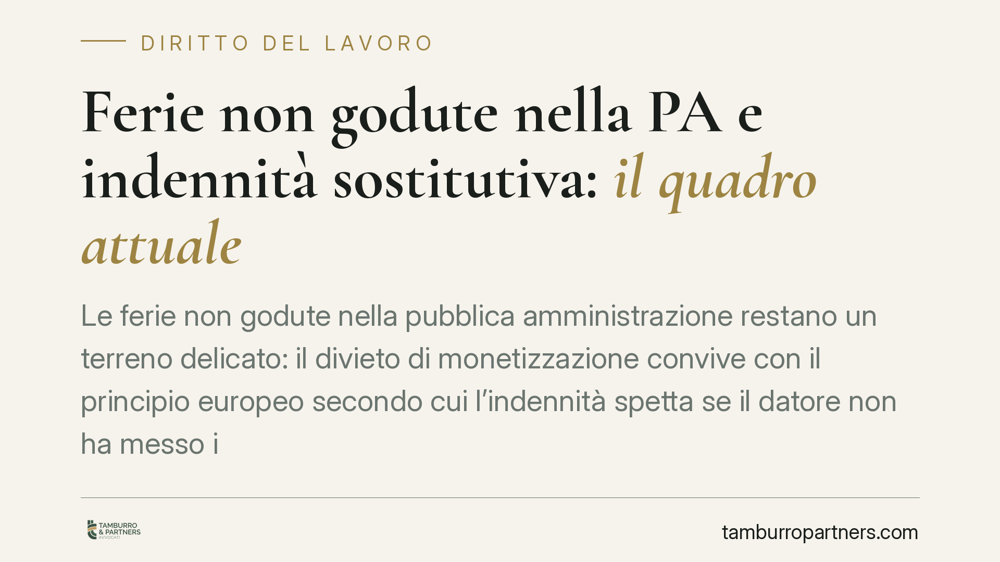

Ferie non godute nella PA e indennità sostitutiva: il quadro attuale
Le ferie non godute nella pubblica amministrazione restano un terreno delicato: il divieto di monetizzazione convive con il principio europeo secondo cui l'indennità spetta se il datore non ha messo il lavoratore in condizione di fruirne. Un recente intervento normativo, da verificare in Gazzetta Ufficiale, riaprirebbe la questione. Ricostruiamo il quadro consolidato e le sue ricadute pratiche.

Il divieto di monetizzazione delle ferie non godute nella PA
Il punto di partenza è l'art. 5, comma 8, del d.l. n. 95/2012 (convertito dalla legge n. 135/2012). La norma stabilisce che le ferie, i riposi e i permessi spettanti al personale pubblico «sono obbligatoriamente fruiti» e «non danno luogo in nessun caso alla corresponsione di trattamenti economici sostitutivi».
Il divieto di monetizzazione nasce da un'esigenza di contenimento della spesa pubblica. In concreto, significa che il dipendente pubblico, di regola, non può farsi pagare le ferie non godute: deve fruirne in natura.
Questa rigidità, però, va letta alla luce del diritto dell'Unione e della giurisprudenza interna, che ne hanno ridimensionato la portata assoluta.
Il principio europeo sulle ferie non godute: l'onere del datore
La Corte di giustizia dell'Unione europea, con le sentenze del 6 novembre 2018, cause C-619/16, *Kreuziger*, e C-684/16, *Max-Planck-Gesellschaft* (riferimenti da verificare in originale), ha chiarito un punto decisivo.
Il lavoratore non perde automaticamente il diritto alle ferie maturate e non godute, né la relativa indennità, per il solo fatto di non averne fatto richiesta. La perdita può verificarsi solo se il datore di lavoro dimostra di aver messo il dipendente in condizione effettiva di fruirne: invitandolo formalmente a prendere le ferie e informandolo, in modo accurato e tempestivo, che in mancanza le avrebbe perse.
L'onere della prova grava quindi sul datore. Se l'amministrazione non prova di aver sollecitato il dipendente, l'indennità sostitutiva torna dovuta. Si tratta di un bilanciamento con l'art. 36 della Costituzione, che tutela il diritto al riposo e alle ferie come irrinunciabile.
La giurisprudenza di legittimità si è mossa nella stessa direzione, riconoscendo che il divieto di monetizzazione non opera quando la mancata fruizione non è imputabile al lavoratore (principio da riscontrare nelle pronunce di Cassazione in materia, verificandone numero e annualità).
La possibile novità normativa (da verificare)
Secondo quanto riportato dalla stampa specializzata, un recente intervento legislativo avrebbe allentato il divieto, riconoscendo espressamente l'indennità sostitutiva a fine rapporto quando il dirigente non abbia invitato formalmente il dipendente a fruire delle ferie, con onere della prova a carico dell'amministrazione e applicazione alle sole ferie maturate dopo l'entrata in vigore.
Precisiamo con trasparenza: alla data di redazione non siamo in grado di confermare gli estremi della norma citata. Prima di fondare qualsiasi decisione su tale fonte, è indispensabile riscontrarne testo e vigenza nella Gazzetta Ufficiale.
Va comunque osservato che, anche a prescindere da un intervento ad hoc, l'esito pratico coincide in larga parte con il quadro già consolidato: l'indennità è dovuta quando la mancata fruizione dipende da inerzia dell'amministrazione.
Implicazioni pratiche per amministrazioni e dipendenti
Per il dirigente, la lezione è chiara: non basta non autorizzare la monetizzazione. Occorre dimostrare di aver sollecitato attivamente la fruizione. Il silenzio dell'amministrazione, di fronte a ferie che si accumulano, espone al rischio di dover corrispondere l'indennità a fine rapporto.
Per il dipendente, il diritto alle ferie non godute non si estingue automaticamente. Se l'amministrazione non ha fornito avvisi tempestivi e documentati, resta uno spazio concreto per richiedere l'indennità sostitutiva al termine del rapporto.
Il nodo probatorio è centrale, e si gioca tutto sulla tracciabilità delle comunicazioni.
Cosa fare in concreto
Per i dirigenti pubblici:
- Monitorate i saldi ferie del personale con cadenza periodica, intervenendo sui residui elevati prima della scadenza.
- Inviate inviti formali e tracciabili a fruire delle ferie, specificando il rischio di perdita del diritto in caso di mancata fruizione.
- Conservate la documentazione di ogni sollecito: l'onere della prova è vostro.
Per i dipendenti pubblici:
- Richiedete e conservate copia delle comunicazioni ricevute dall'amministrazione sulle ferie maturate.
- Verificate al termine del rapporto il saldo delle ferie non godute e la data di maturazione.
- Valutate, con assistenza qualificata, se sussistano i presupposti per l'indennità sostitutiva quando la mancata fruizione non vi sia imputabile.
Disclaimer
Contributo informativo a cura di Tamburro & Partners Avvocati - Avv. Giuseppe Tamburro. Non costituisce parere legale.
Ogni storia di lavoro ha i suoi tempi.
Se gestisci HR e vuoi un confronto su contenzioso, ispezioni o licenziamenti, scrivi allo studio. Ti rispondiamo entro un giorno lavorativo.